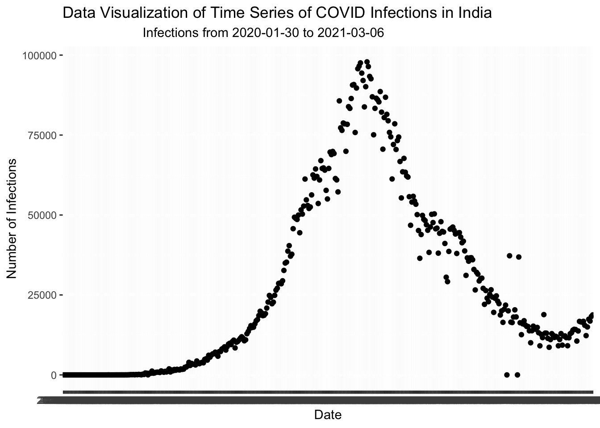
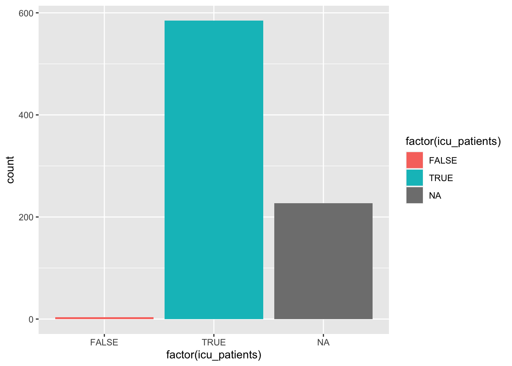

These are the collections of the projects for DS 5339 - Data Visualization. Projects 1 to Projects 6 are weekly Projects, whiles Final Project is the semester project done for a presentation.
Use the provided data at the website https://ourworldindata.org/coronavirus/country/united-states?country=~USA. Choose a state or region in the US and display the amounts of either hospitalizations or infections in a data viz. I am not going to assign a specific region or state since I want everyone to create a unique dataviz. I will not grade you on your selection of region, but instead the quality of the dataviz.
library(readxl)
owid_covid_data<-read_excel("Sprojects_files/owid-covid-data.xlsx")
names(owid_covid_data)## [1] "iso_code"
## [2] "continent"
## [3] "location"
## [4] "date"
## [5] "total_cases"
## [6] "new_cases"
## [7] "new_cases_smoothed"
## [8] "total_deaths"
## [9] "new_deaths"
## [10] "new_deaths_smoothed"
## [11] "total_cases_per_million"
## [12] "new_cases_per_million"
## [13] "new_cases_smoothed_per_million"
## [14] "total_deaths_per_million"
## [15] "new_deaths_per_million"
## [16] "new_deaths_smoothed_per_million"
## [17] "reproduction_rate"
## [18] "icu_patients"
## [19] "icu_patients_per_million"
## [20] "hosp_patients"
## [21] "hosp_patients_per_million"
## [22] "weekly_icu_admissions"
## [23] "weekly_icu_admissions_per_million"
## [24] "weekly_hosp_admissions"
## [25] "weekly_hosp_admissions_per_million"
## [26] "new_tests"
## [27] "total_tests"
## [28] "total_tests_per_thousand"
## [29] "new_tests_per_thousand"
## [30] "new_tests_smoothed"
## [31] "new_tests_smoothed_per_thousand"
## [32] "positive_rate"
## [33] "tests_per_case"
## [34] "tests_units"
## [35] "total_vaccinations"
## [36] "people_vaccinated"
## [37] "people_fully_vaccinated"
## [38] "new_vaccinations"
## [39] "new_vaccinations_smoothed"
## [40] "total_vaccinations_per_hundred"
## [41] "people_vaccinated_per_hundred"
## [42] "people_fully_vaccinated_per_hundred"
## [43] "new_vaccinations_smoothed_per_million"
## [44] "stringency_index"
## [45] "population"
## [46] "population_density"
## [47] "median_age"
## [48] "aged_65_older"
## [49] "aged_70_older"
## [50] "gdp_per_capita"
## [51] "extreme_poverty"
## [52] "cardiovasc_death_rate"
## [53] "diabetes_prevalence"
## [54] "female_smokers"
## [55] "male_smokers"
## [56] "handwashing_facilities"
## [57] "hospital_beds_per_thousand"
## [58] "life_expectancy"
## [59] "human_development_index"Indiadata<-subset(owid_covid_data,location=="India")
Date<-Indiadata$date
Infections<-Indiadata$new_caseslibrary(ggplot2)
options(stringsAsFactors = FALSE)
ggplot(data = Indiadata, aes(x = date, y = new_cases)) +
geom_point() +
labs(x = "Date",
y = "Number of Infections",
title = "Data Visualization of Time Series of COVID Infections in India",
subtitle = " Infections from 2020-01-30 to 2021-03-06") ### Enhanced Visualization for Project 1 ### Selecting of the data
table(owid_covid_data$continent)##
## Africa Asia Europe North America Oceania
## 19220 17477 17680 8635 2080
## South America
## 4464Europedata<-subset(owid_covid_data,continent=="Europe")
str(Europedata)## tibble[,59] [17,680 × 59] (S3: tbl_df/tbl/data.frame)
## $ iso_code : chr [1:17680] "ALB" "ALB" "ALB" "ALB" ...
## $ continent : chr [1:17680] "Europe" "Europe" "Europe" "Europe" ...
## $ location : chr [1:17680] "Albania" "Albania" "Albania" "Albania" ...
## $ date : chr [1:17680] "2020-02-25" "2020-02-26" "2020-02-27" "2020-02-28" ...
## $ total_cases : num [1:17680] NA NA NA NA NA NA NA NA NA NA ...
## $ new_cases : num [1:17680] NA NA NA NA NA NA NA NA NA NA ...
## $ new_cases_smoothed : num [1:17680] NA NA NA NA NA NA NA NA NA NA ...
## $ total_deaths : num [1:17680] NA NA NA NA NA NA NA NA NA NA ...
## $ new_deaths : num [1:17680] NA NA NA NA NA NA NA NA NA NA ...
## $ new_deaths_smoothed : num [1:17680] NA NA NA NA NA NA NA NA NA NA ...
## $ total_cases_per_million : num [1:17680] NA NA NA NA NA NA NA NA NA NA ...
## $ new_cases_per_million : num [1:17680] NA NA NA NA NA NA NA NA NA NA ...
## $ new_cases_smoothed_per_million : num [1:17680] NA NA NA NA NA NA NA NA NA NA ...
## $ total_deaths_per_million : num [1:17680] NA NA NA NA NA NA NA NA NA NA ...
## $ new_deaths_per_million : num [1:17680] NA NA NA NA NA NA NA NA NA NA ...
## $ new_deaths_smoothed_per_million : num [1:17680] NA NA NA NA NA NA NA NA NA NA ...
## $ reproduction_rate : num [1:17680] NA NA NA NA NA NA NA NA NA NA ...
## $ icu_patients : logi [1:17680] NA NA NA NA NA NA ...
## $ icu_patients_per_million : logi [1:17680] NA NA NA NA NA NA ...
## $ hosp_patients : logi [1:17680] NA NA NA NA NA NA ...
## $ hosp_patients_per_million : logi [1:17680] NA NA NA NA NA NA ...
## $ weekly_icu_admissions : logi [1:17680] NA NA NA NA NA NA ...
## $ weekly_icu_admissions_per_million : logi [1:17680] NA NA NA NA NA NA ...
## $ weekly_hosp_admissions : logi [1:17680] NA NA NA NA NA NA ...
## $ weekly_hosp_admissions_per_million : logi [1:17680] NA NA NA NA NA NA ...
## $ new_tests : num [1:17680] 8 5 4 1 8 3 2 5 6 8 ...
## $ total_tests : num [1:17680] 8 13 17 18 26 29 31 36 42 50 ...
## $ total_tests_per_thousand : num [1:17680] 0.003 0.005 0.006 0.006 0.009 0.01 0.011 0.013 0.015 0.017 ...
## $ new_tests_per_thousand : num [1:17680] 0.003 0.002 0.001 0 0.003 0.001 0.001 0.002 0.002 0.003 ...
## $ new_tests_smoothed : num [1:17680] NA NA NA NA NA NA NA 4 4 5 ...
## $ new_tests_smoothed_per_thousand : num [1:17680] NA NA NA NA NA NA NA 0.001 0.001 0.002 ...
## $ positive_rate : num [1:17680] NA NA NA NA NA NA NA NA NA NA ...
## $ tests_per_case : num [1:17680] NA NA NA NA NA NA NA NA NA NA ...
## $ tests_units : chr [1:17680] "tests performed" "tests performed" "tests performed" "tests performed" ...
## $ total_vaccinations : logi [1:17680] NA NA NA NA NA NA ...
## $ people_vaccinated : logi [1:17680] NA NA NA NA NA NA ...
## $ people_fully_vaccinated : logi [1:17680] NA NA NA NA NA NA ...
## $ new_vaccinations : logi [1:17680] NA NA NA NA NA NA ...
## $ new_vaccinations_smoothed : logi [1:17680] NA NA NA NA NA NA ...
## $ total_vaccinations_per_hundred : logi [1:17680] NA NA NA NA NA NA ...
## $ people_vaccinated_per_hundred : logi [1:17680] NA NA NA NA NA NA ...
## $ people_fully_vaccinated_per_hundred : logi [1:17680] NA NA NA NA NA NA ...
## $ new_vaccinations_smoothed_per_million: logi [1:17680] NA NA NA NA NA NA ...
## $ stringency_index : num [1:17680] 8.33 8.33 8.33 8.33 8.33 8.33 8.33 8.33 8.33 8.33 ...
## $ population : num [1:17680] 2877800 2877800 2877800 2877800 2877800 ...
## $ population_density : num [1:17680] 105 105 105 105 105 ...
## $ median_age : num [1:17680] 38 38 38 38 38 38 38 38 38 38 ...
## $ aged_65_older : num [1:17680] 13.2 13.2 13.2 13.2 13.2 ...
## $ aged_70_older : num [1:17680] 8.64 8.64 8.64 8.64 8.64 ...
## $ gdp_per_capita : num [1:17680] 11803 11803 11803 11803 11803 ...
## $ extreme_poverty : num [1:17680] 1.1 1.1 1.1 1.1 1.1 1.1 1.1 1.1 1.1 1.1 ...
## $ cardiovasc_death_rate : num [1:17680] 304 304 304 304 304 ...
## $ diabetes_prevalence : num [1:17680] 10.1 10.1 10.1 10.1 10.1 ...
## $ female_smokers : num [1:17680] 7.1 7.1 7.1 7.1 7.1 7.1 7.1 7.1 7.1 7.1 ...
## $ male_smokers : num [1:17680] 51.2 51.2 51.2 51.2 51.2 51.2 51.2 51.2 51.2 51.2 ...
## $ handwashing_facilities : num [1:17680] NA NA NA NA NA NA NA NA NA NA ...
## $ hospital_beds_per_thousand : num [1:17680] 2.89 2.89 2.89 2.89 2.89 2.89 2.89 2.89 2.89 2.89 ...
## $ life_expectancy : num [1:17680] 78.6 78.6 78.6 78.6 78.6 ...
## $ human_development_index : num [1:17680] 0.795 0.795 0.795 0.795 0.795 0.795 0.795 0.795 0.795 0.795 ...library(tidyverse)
ggplot(data=Europedata,aes(location,total_cases))+
geom_bar(stat="identity")+theme(axis.text.x=element_text(angle=90,hjust=1,vjust=0.5))Use the provided data at the website ( https://ourworldindata.org/coronavirus/country/united-states?country=~USA). Choose a state or region in the US and display the distribution of either hospitalizations or infections in a data viz. I am not going to assign a specific region or state since I want everyone to create a unique dataviz. I will not grade you on your selection of region, but instead the quality of the dataviz.
Indiadata<-subset(owid_covid_data,location=="India")Infections<-Indiadata$new_cases
Date<-Indiadata$datehist(Infections, main="Distribution of Infections of COVID 19 in India")
lines(density(Infections,adjust=1),col="blue")Use the provided data at the website (https://ourworldindata.org/coronavirus/country/united-states?country=~USA). Choose a state or region in the US and display proportion by a grouping for any characteristics in the data. I am not going to assign a specific region or state since I want everyone to create a unique dataviz. I will not grade you on your selection of region, but instead the quality of the dataviz.
mydata<-subset(owid_covid_data, location=="United States" | location=="Canada",select=c(total_cases,new_cases,total_deaths,icu_patients,total_vaccinations,people_vaccinated,people_fully_vaccinated,weekly_icu_admissions))library(ggplot2)
plt <- ggplot(mydata, aes(factor(icu_patients)))
plt + geom_bar(aes(fill=factor(icu_patients)))
Use the provided data at the website (https://ourworldindata.org/coronavirus/country/united-states?country=~USA). Choose a state or region in the US and display a set of associations with hospitalization or infection rates. You can choose the variables that you want to explore associations using these quantities. I am not going to assign a specific region or state since I want everyone to create a unique dataviz. I will not grade you on your selection of region, but instead the quality of the dataviz.
Indiadata<-subset(owid_covid_data,location=="India")library("car")
scatterplot(new_cases_per_million ~ new_deaths_per_million, data = Indiadata)Visualizing Uncertainty Use the provided data at the website ( https://ourworldindata.org/coronavirus/country/united-states?country=~USA). Choose a state or region in the US and display how the estimated infection rate trends over time and also display the uncertainty in estimating the true infection rate. I am not going to assign a specific region or state since I want everyone to create a unique dataviz. I will not grade you on your selection of region, but instead the quality of the dataviz.
library(ggplot2)
library(scales)
ggplot(Indiadata, aes(factor(date),new_cases_per_million, group =location ,
color = location)) +
geom_line(size = 1, alpha = 0.8) +
geom_point(size = 1) +
geom_smooth() +
scale_color_brewer(name = "Country", palette = "Set1")+
xlab("Date") +
ylab("Rate of New Infection") +
theme_minimal()library(ggplot2)
x<-factor(Indiadata$date)
y1<-Indiadata$new_cases_per_million
y2<-Indiadata$new_cases_smoothed_per_million
ggplot(Indiadata, aes(date, y = Rate , color = variable)) +
geom_point(aes(y = y1, col = "Expected Rate")) +
geom_point(aes(y = y2, col = "Actual Rate"))Create a new dataviz of a research interest of yours and/or a type of dataviz you want to try out. This can be of any type and will become a focus or highlight of your dataviz portfolio. Go through the design process in entirety and reflect on the story your dataviz is telling. Redesign if it is NOT telling the story you intend!
library(ggplot2)
require(ggplot2)
library(plyr)
library(RColorBrewer)
require(scales)
require(RColorBrewer) ride_share <- read.csv("~/Desktop/Data/ride_share.csv")ride_share<-ride_share[order(as.Date(ride_share$Date.Time, format="%m/%d/%Y")),]pickup_time <- format(as.POSIXct(strptime(ride_share$Date.Time,"%m/%d/%Y %H:%M:%S",tz="")), format="%H:%M:%S")
pickup_date <- format(as.POSIXct(strptime(ride_share$Date.Time,"%m/%d/%Y %H:%M:%S",tz="")), format="%m/%d/%Y")ride_share$Time <- pickup_time
ride_share$Date <- pickup_date
ride_share$Weekday <- weekdays(as.Date(ride_share$Date.Time,format="%m/%d/%Y"))pickup_frequency<- as.data.frame(table(ride_share$Weekday))
names(pickup_frequency)<- c("Weekday","Pickups")
pickup_frequency$Weekday<- factor(pickup_frequency$Weekday, levels=c("Monday",
"Tuesday", "Wednesday", "Thursday", "Friday", "Saturday","Sunday"))
pickup_frequency<-pickup_frequency[order(pickup_frequency$Weekday),]
pickup_frequency[which.max(pickup_frequency$Pickups),]## Weekday Pickups
## 5 Thursday 755145pickup_frequency[which.max(pickup_frequency$Pickups),]## Weekday Pickups
## 5 Thursday 755145pickup_frequency[which.min(pickup_frequency$Pickups),]## Weekday Pickups
## 4 Sunday 490180ggplot(data=pickup_frequency, aes(x = Weekday, y=Pickups, fill=Weekday))+geom_bar(stat = "identity")+ggtitle(label = "Weekday Pickup Comparison")+theme_minimal()+theme(plot.title = element_text(hjust = 0.5, lineheight = 0.8, face = "bold"))+xlab("Weekdays")+ylab("Number of Pickups")ride_share$Month<-months(as.POSIXct(ride_share$Date, format="%m/%d/%Y"))
weekly_trend <- subset(ride_share, select = c(Weekday, Month))
weekly_trend<- ddply(weekly_trend, .(weekly_trend$Weekday, weekly_trend$Month), nrow)
names(weekly_trend) <- c("Weekday", "Month","Pickups")
weekly_trend$Weekday <- factor(weekly_trend$Weekday, levels=c("Monday",
"Tuesday", "Wednesday", "Thursday", "Friday", "Saturday","Sunday"))
weekly_trend$Month<- factor(weekly_trend$Month, levels = c("April", "May", "June", "July","August","September"))
weekly_trend<-weekly_trend[with(weekly_trend, order(Month, Weekday)),]ggplot(weekly_trend,aes(Weekday, Pickups)) +
geom_bar(aes(fill = Month),stat = "identity",position = "dodge")+scale_fill_brewer(palette = "Accent") +ggtitle(label = "Weekday Pickup Each Month")+theme_minimal()+theme(plot.title = element_text(hjust = 0.5, lineheight = 0.8, face = "bold"))+xlab("Weekdays")+ylab("Number of Pickups")mpickups<-as.data.frame(table(ride_share$Month))
names(mpickups)<- c("Month","Pickups")
mpickups$Month<- factor(mpickups$Month, levels = c("April", "May", "June", "July","August","September"))
mpickups<-mpickups[order(mpickups$Month),]
ggplot(mpickups, aes(x=Month, y=Pickups, group=1))+geom_point(color="dark green")+geom_line(color="orange")+ggtitle(label = "Trend over the Months by Month")+theme_minimal()+theme(plot.title = element_text(hjust=0.5, lineheight = .8, face = "bold"))+ylab("Number of Pickups")monthly_trend <- subset(ride_share, select = c(Date, Month))
monthly_trend<- ddply(monthly_trend, .(monthly_trend$Date, monthly_trend$Month), nrow)
names(monthly_trend) <- c("Date", "Month","Pickups")
monthly_trend$Date <- as.character.Date(monthly_trend$Date)
monthly_trend$Date <-as.Date(monthly_trend$Date, format = "%m/%d/%Y")daily_trend <- subset(ride_share, select = c(Time, Month))
H<-format(as.POSIXct(strptime(daily_trend$Time, "%H:%M:%S", tz="")), format="%H")
daily_trend$Time <- H
daily_trend$Time <- as.character.Date(daily_trend$Time, format="%H")
daily_trend<- ddply(daily_trend, .(daily_trend$Time, daily_trend$Month), nrow)
names(daily_trend)<- c("Hour","Month","Pickups")ggplot(daily_trend, aes(Hour, Pickups, fill=Month))+geom_bar(stat = "identity")+ggtitle(label = "Trend Over Time of the Day")+theme_minimal()+theme(plot.title = element_text(hjust=0.5, lineheight = .8, face = "bold"))+xlab("Hour")+ylab("Number of Pickups")ggplot(daily_trend, aes(Hour, Pickups, group=Month))+geom_line(aes(color=Month))+ggtitle(label = "Trend Over Time of the Day")+theme_minimal()+theme(plot.title = element_text(hjust=0.5, lineheight = .8, face = "bold"))+xlab("Hour")+ylab("Number of Pickups")ggplot(monthly_trend, aes(Date, Pickups))+geom_line(aes(color=Month))+ geom_smooth(method = 'loess',color="red")+scale_x_date(breaks = date_breaks("9 days"))+ggtitle(label = "Trend over the Months by Date")+theme_minimal()+theme(plot.title = element_text(hjust=0.5, lineheight = .8, face = "bold"),axis.text.x = element_text(angle=90))+ylab("Number of Pickups")